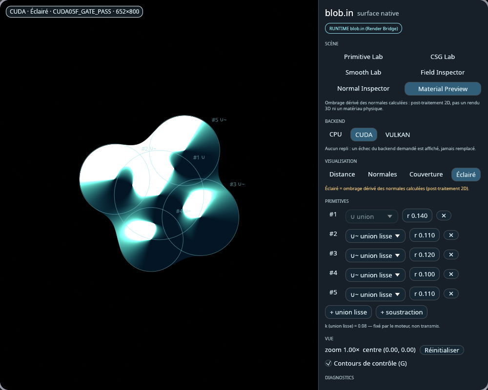
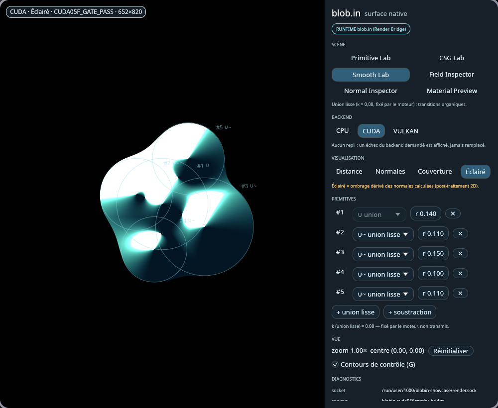

État au 30 octobre 2026. Ce dossier décrit blob.in 0.1.0, la projection publique au commit 4278b06. Les liens soulignés mènent aux fichiers de ce commit, figés.
Dossier · La surface native
blob.in — une surface qui n'invente aucun pixel
La surface ne calcule aucune géométrie : chaque pixel de la vue vient d'une image reçue du moteur, par un contrat strict. Quand quelque chose échoue, elle le montre ; elle ne le remplace jamais.
Sur cette page
En une image
Pensez à un projectionniste. Il projette la bobine qu'on lui confie, sans la retoucher. Si une image arrive brûlée, il la montre brûlée, et il le note au registre ; il ne la remplace pas par une image de son cru pour que la salle ne voie rien.
blob.in est ce projectionniste. Un moteur calcule des formes ; la surface les affiche à l'écran, vérifie chaque image qu'elle reçoit, et dit tout haut ce qui ne va pas.
Ce que fait la surface
blob.in est une application de bureau native, écrite en Rust, pour Wayland (Hyprland). Elle montre des formes douces : des cercles qui s'unissent, se soustraient, fusionnent en arrondi. Le moteur les décrit par un champ de distance signée — pour chaque point, la distance au bord de la forme — et en tire une image.
La fenêtre propose six « labs » (primitives, opérations booléennes, union lisse, champ, normales, matière), quatre façons de voir le même calcul (la distance, les normales, la couverture, un éclairage) et le choix du moteur de calcul : processeur, CUDA ou Vulkan. On déplace un cercle à la souris, on change son rayon à la molette, on ajoute ou retire une forme.

CUDA05F_GATE_PASS affichée telle quelle en haut à gauche. Le mode « Éclairé » est un ombrage calculé à partir des normales, en 2D : ce n'est pas un rendu 3D. Source : run.json.Le panneau Diagnostics affiche les données réelles de la session et de l'image à l'écran : le moteur demandé et le moteur effectif, la qualification recopiée mot pour mot, les dimensions, l'aller-retour mesuré. Aucune métrique n'est inventée : un champ qui n'a pas été mesuré n'est pas affiché.
Le contrat BLOB-FRAME-v1
Le moteur et la surface sont deux programmes. Ils se parlent par un socket Unix local ; chaque image voyage dans une zone de mémoire partagée (un memfd) que le moteur scelle avant de la confier : une fois scellée, personne ne peut plus la modifier.
Avant d'afficher, la surface vérifie : la taille demandée, l'écart exact entre deux lignes de pixels, le format, l'empreinte de la géométrie, la révision de la scène, le numéro de la demande, et que le moteur effectif est bien celui qui a été demandé. Si un seul point manque, l'image est refusée, et la raison est affichée.
« Aucun repli : un échec du backend demandé est affiché, jamais remplacé », dit l'interface elle-même. Si l'on demande CUDA et que la carte refuse, la surface ne bascule pas en douce sur le processeur : elle le dit. Voir crates/blob-frame.
Dix-neuf pannes, provoquées exprès
Pour vérifier qu'elle refuse ce qu'elle doit refuser, la surface a son propre serveur de test, isolé, qui peut provoquer dix-neuf pannes à la demande. Une bannière « SERVEUR DE TEST » reste affichée tant qu'il est branché : ses mires ne sont jamais présentées comme des images du moteur.
| Famille | Pannes provoquées |
|---|---|
| Le moteur se tait | erreur de rendu, délai dépassé, connexion fermée, aucune réponse |
| L'image ment sur elle-même | mauvaise taille, image tronquée, mémoire non scellée, lignes rembourrées, format inattendu, empreinte malformée |
| Le moteur triche | un autre moteur que celui demandé (le repli silencieux), mauvaise révision, réponse à une autre demande |
| Le message est hors contrat | champ inconnu, deux zones de mémoire jointes, aucune jointe, message trop grand, message illisible, mauvaise version du protocole |
Source : blob-frame-testserver.
Ce qui est prouvé, et dans quel cadre
La version publique a été compilée seule, à partir de son seul contenu : 225 tests passent. Deux sont mis de côté par défaut, parce qu'ils relisent des images du moteur gardées hors du dépôt.
Les essais de bout en bout ouvrent une vraie fenêtre sous Hyprland, la redimensionnent à quatre tailles, et capturent à chaque fois le seul rectangle de la fenêtre. Ils ont tourné avec les trois moteurs. Un exercice scripté enchaîne quatorze gestes — déplacer un cercle, changer un rayon, changer d'opération, de vue, de moteur — et vérifie à chaque pas que l'image suit.

Les mêmes essais mesurent l'aller-retour entre un geste et l'image affichée : de 14 à 35 ms sur processeur, de 289 à 379 ms en Vulkan, de 470 à 670 ms en CUDA. La vitesse n'est pas l'objet de cette surface, et aucune cadence n'est revendiquée.
Depuis, le dépôt a commencé à dessiner sa propre interface sans bibliothèque toute faite : contrôles, tracés, courbes de Bézier, polygones à trous, gestes. Chaque étape porte un rapport et un verdict borné (« scoped pass »), qualifiée sans écran ou dans un compositeur isolé.
Historique
| Date | Ce qui se passe |
|---|---|
| 10 octobre 2026 | Le contrat BLOB-FRAME-v1 côté client et le serveur de test arrivent ; le même jour, les premiers essais de bout en bout avec le vrai moteur, sur les trois moteurs de calcul (30 commits). |
| 12 octobre | La plus grosse journée (39 commits) : l'interface native commence — contrôles, tracés, remplissages — et les gestes sont qualifiés dans un compositeur isolé. |
| 13–14 octobre | Défilement et survol, verrou d'axe pour les glissements, curseur de liste. |
| 30 octobre | Première version publique, 0.1.0, sous licence MIT : un seul commit, découpé depuis le dépôt privé par un outil, compilé et testé seul avant d'être poussé. |
Ce que ce n'est pas
- Pas le moteur. Le moteur qui calcule les formes n'est pas encore publié ; sans lui, la version publique tourne avec le serveur de test et ses mires.
- Pas rapide, pas encore. Aucune cadence de 60 images par seconde n'est qualifiée ; les allers-retours mesurés vont jusqu'à 670 ms.
- Pas un rendu 3D. L'éclairage est un ombrage 2D calculé à partir des normales.
- Pas encore essayé au vrai pointeur. Les gestes sont qualifiés sans écran et dans un compositeur isolé ; l'essai avec une vraie souris dans la session reste ouvert.
Ce que ça change, selon qui vous êtes
Développeur
Un exemple complet de frontière entre deux processus : mémoire partagée scellée, contrat vérifié champ par champ, et un serveur de pannes pour le prouver.
Responsable qualité
Chaque refus a son test, chaque capture son empreinte, et la surface ne présente jamais une image de test comme une vraie.
Décideur
Un logiciel qui dit quand il échoue plutôt que de faire semblant : la condition pour qu'on puisse lui confier une machine.
Pour aller plus loin
- Le dépôt : gnu6dotlive/blob.in.
- La décision de licence et ce qui n'est pas publié : LICENCE-DECISION-20261030.md.
- La recherche de rendu natif, côté moteur de scènes : le dossier in.gnu6.